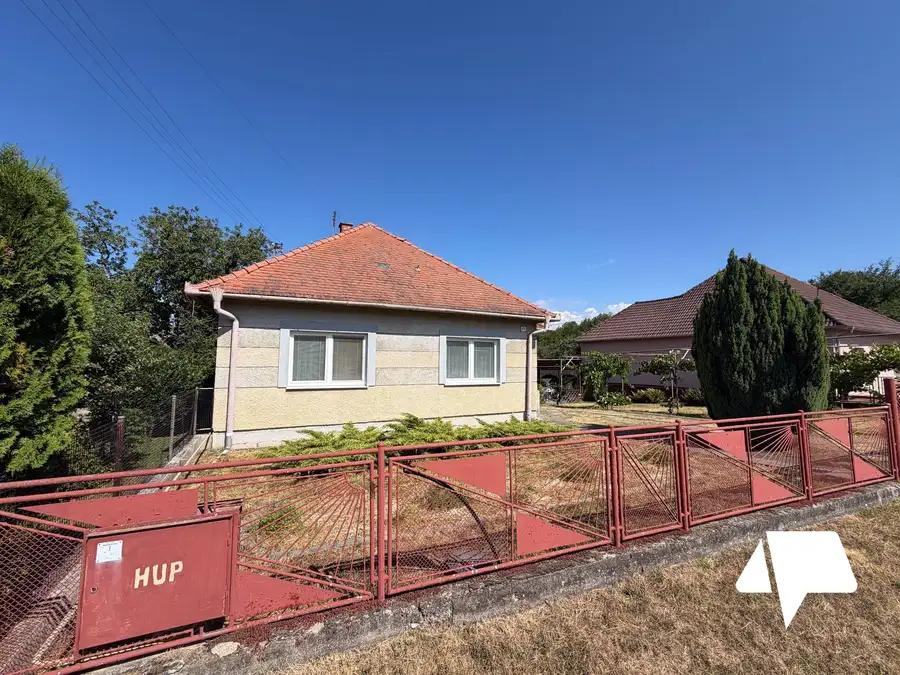
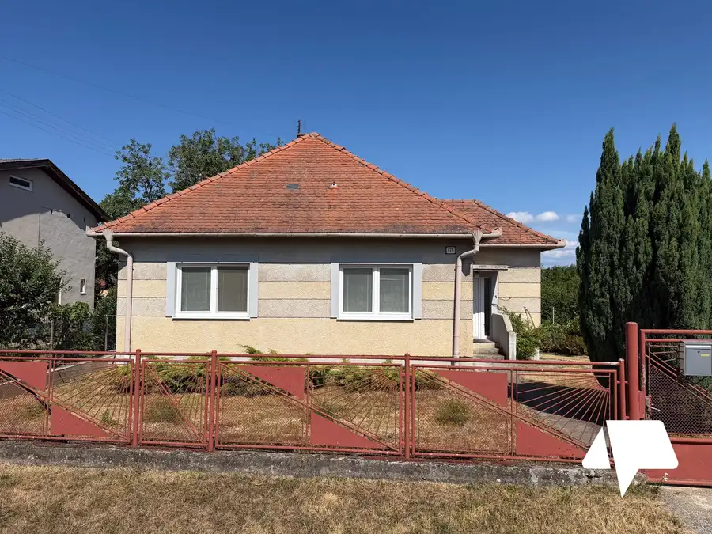
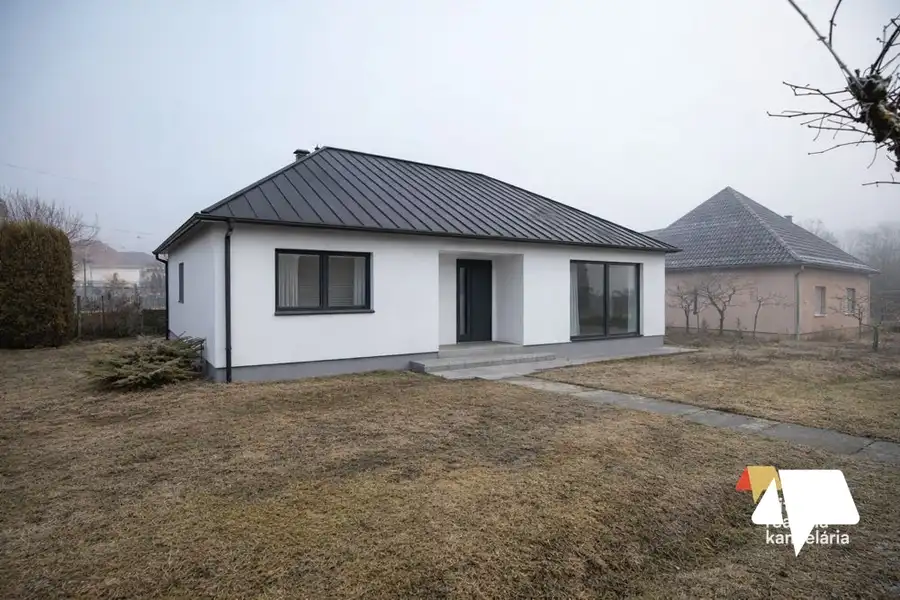
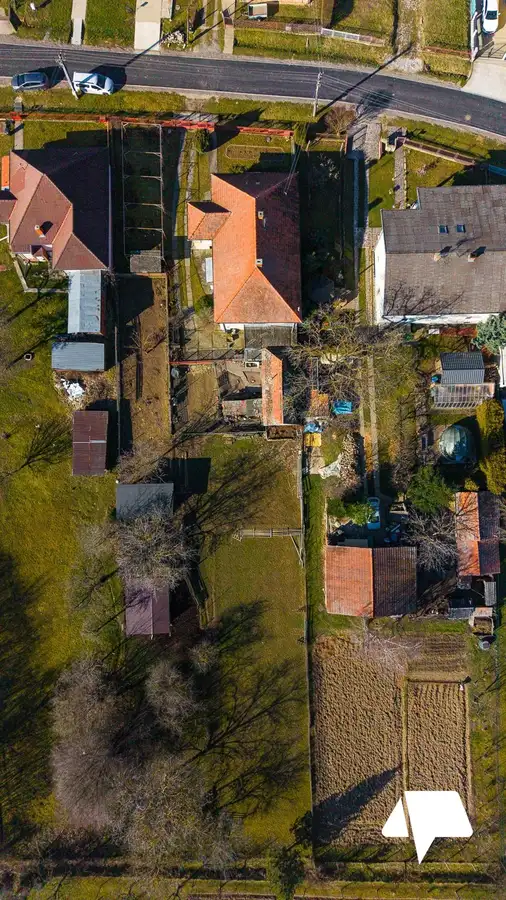
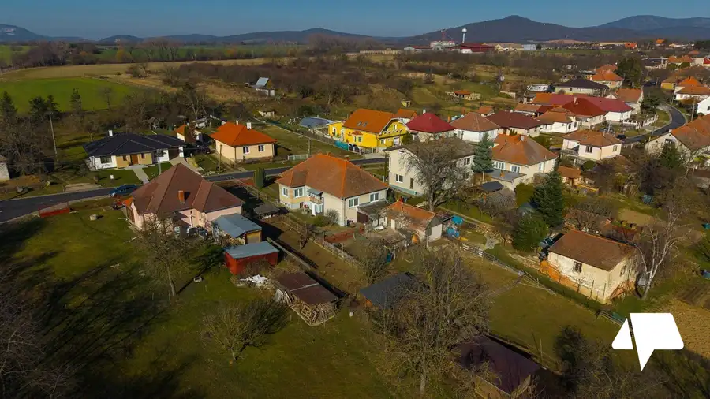
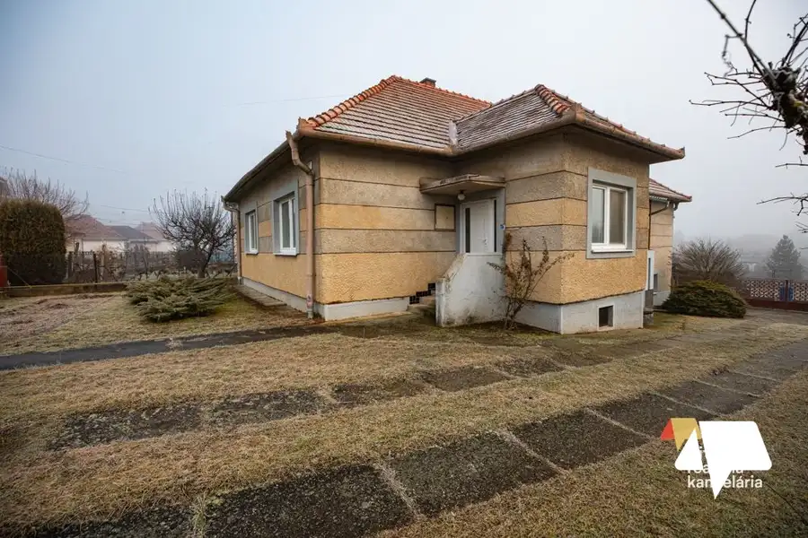
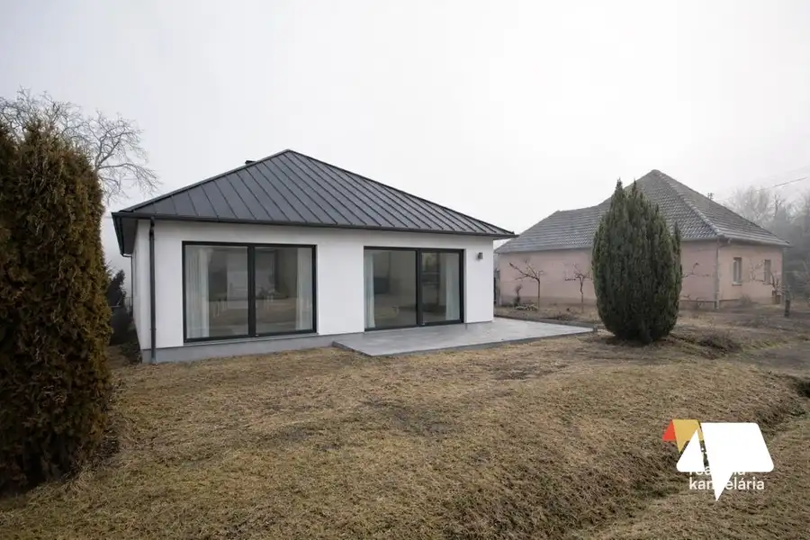
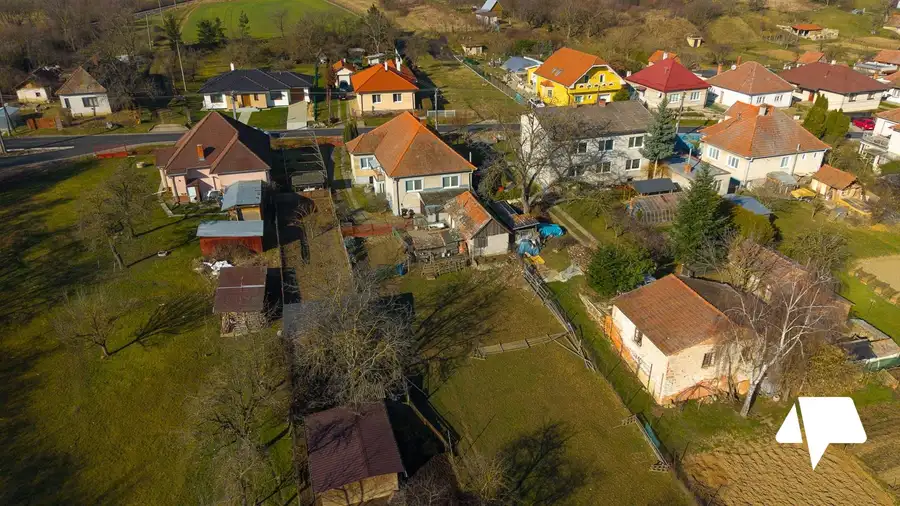

Predaj rodinný dom Sľažany
Sľažany








- Plocha159 m²
- StavPôvodný stav
- VlastníctvoOsobné
O nehnuteľnosti
Hľadáte dom, ktorý si môžete prerobiť presne podľa svojich predstáv?Ponúkame na predaj rodinný dom v obci Sľažany (okres Zlaté Moravce).Dom bol postavený v roku 1958 a rozšírený prístavbou v roku 1970. Dnes je vhodný na okamžeté bývanie aj postupnú rekonštrukciu, čo novému majiteľovi otvára možnosť vytvoriť si moderné bývanie s charakterom a atmosférou pôvodnej stavby.Pozemok, ktorý dáva možnostiCelková výmera pozemkov: 746 m²159 m² – zastavaná plocha a nádvorie587 m² – priestranný dvorDvor ponúka dostatok miesta na záhradu, rodinné posedenie, altánok, bazén,či hospodárske využitie. Je to priestor, kde môže vzniknúť váš vysnívaný exteriér.Kompletné inžinierske sieteVeľkou výhodou nehnuteľnosti je napojenie na všetky základné siete: Elektrika Plyn Obecná voda Kanalizácia Vlastná studňaIdeálne pre:Rodinu, ktorá si chce vytvoriť domov podľa vlastného štýluInvestora hľadajúceho projekt na rekonštrukciuZáujemcov o pokojné bývanie na dedine s dobrou dostupnosťou do Zlatých Moraviec či NitryCena: 135 000€Tel.: 0908 698 089E-mail: kazik@nitrianskereality.comUvedená cena je vrátane provízie realitnej kancelárie. Zabezpečíme Vám kompletný právny a poradenský servis. Naši odborníci v Nitrianskej realitnej kancelárii vám pomôžu aj s finančným poradenstvom a vybavením hypotekárneho úveru.Vypočítajte si výšku mesačnej splátky hypotéky na našej kalkulačke tu: https://profibroker.sk/hypoteka/Šťastie je doma.
Parametre
- Druh
- Rodinný dom
- Druh domu
- Klasický dom
- Dátum zverejnenia
- 15. 02. 2026
- Energetický certifikát budovy
- nie je
- Plocha pozemku
- 746 m²
- Počet kúpeľní
- 1
- Počet nadzemných podlaží
- 1
- Počet spální
- 1
- Prístupová komunikácia
- Asfaltová
- Rok poslednej rekonštrukcie
- 1970
- Rok výstavby
- 1958
- Stav nehnuteľnosti
- Pôvodný stav
- Telekomunikácie
- Telefón
- Terén pozemku
- Mierne svahovitý
- Typ
- Predaj
- Typ konštrukcie
- Tehlová, Iná
- Vlastníctvo
- Osobné
- Vybavenie
- Technická miestnosť, Záhrada, Dielňa, Záhradný domček
- Vykurovanie
- Ústredné
- Zastavaná plocha
- 159 m²
- Úžitková plocha
- 159 m²